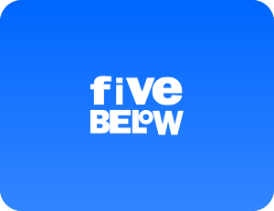
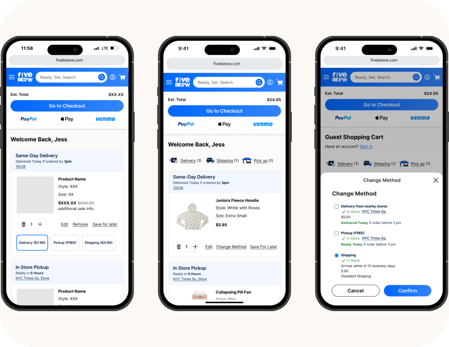
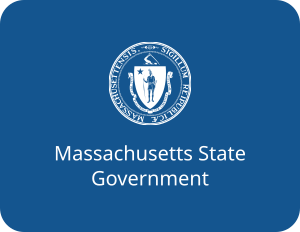
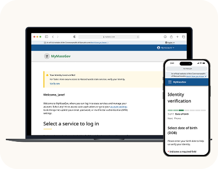
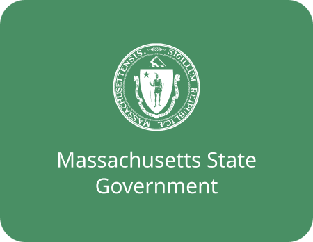
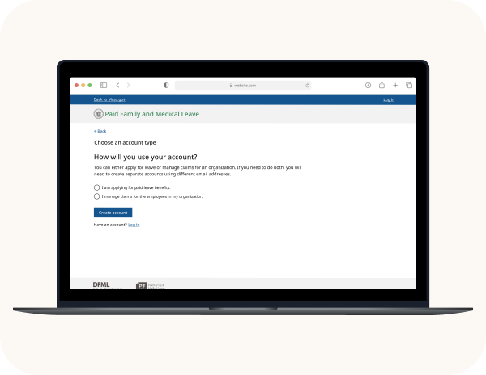

Introduction to Accessibility
NERD Summit · 2023

Hello
I'm Yu-Li I came to design through an unconventional route. I spent years working in international women's and children's rights, living across multiple countries, and trying to make complex systems work for people who are most often left out of the room.
Somewhere along the way, I realized design was another way to do the same thing. I care a lot about accessibility, not because it's required, but because access is a human right.
I'm currently looking for my next remote role. Open to wherever the work takes me, literally.
Most client work is under NDA. Select case studies shown below — reach out to see the full portfolio.


fiveBelow
Users weren't completing their purchases. The drop-off wasn't a payment problem or a price problem. It was a user experience problem. We dug into the "why", conducting research that uncovered where trust broke down and shaped the redesign that fixed it.
NDA project preview. Full details available on request.
The Commonwealth of Massachusetts | Mass Digital Services (MDS)
25,000+ Massachusetts residents need to prove who they are to access state services. My team built the identity verification experience for MyMassGov. I led accessibility across design and engineering, making sure every constituent could complete verification regardless of ability, device, or assistive technology.
NDA project preview. Full details available on request.




The Commonwealth of Massachusetts | The Department of Family and Medical Leave (DFML)
People filing for paid leave are often navigating a crisis. I designed WCAG 2.1 AA-compliant features for Massachusetts' Paid Family & Medical Leave program, turning dense requirements into a seamless experiences.
Since launch, the program has paid out $1 billion in benefits.
NDA project preview. Full details available on request.
Accessibility isn't a checkbox. I audit, remediate, train, and build systems so accessibility is baked in, not bolted on.
From wireframe to high-fidelity. I build thoughtful, tested interfaces that balance user needs with business requirements.
AI as a force multiplier. I use AI to bridge the gap between design and and build proofs-of-concept at speed without losing the human-centered strategy at the core.